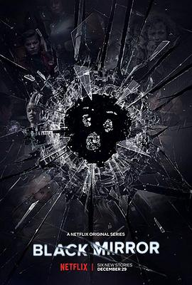

黑镜 第四季 / Black Mirror Season 4
又名：黑镜子 第四季
第4集结局最暖，然而打破了“细思恐极”的套路；每一季的最后一集都是比较出彩的 =。=
作品信息
| 导演 | 托比·海恩斯 / 朱迪·福斯特 / 约翰·希尔寇特 / 蒂莫西·范·帕腾 / 大卫·斯雷德 / 柯尔姆·麦卡锡 |
| 编剧 | 查理·布鲁克 / 威廉·布里奇斯 |
| 主演 | 杰西·普莱蒙 / 克里斯汀·米利欧缇 / 吉米·辛普森 / 比利·马格努森 / 米凯拉·科尔 / 奥赛·伊克希尔 / 罗丝玛丽·德薇特 / 布伦娜·哈丁 / 欧文·提格 / 安吉拉·弗恩特 / 尼古拉斯·坎贝尔 / 保罗·布朗斯坦 / 安德丽娅·赖斯伯勒 / 安东尼·威尔士 / 乔治娜·坎贝尔 / 乔·科尔 / 乔治·布莱顿 / 格温妮丝·凯沃斯 / 杰西·卡芙 / 玛克辛·皮克 / 克林特·戴尔 / 道格拉斯·霍奇 / 莱蒂希娅·赖特 / 丹尼尔·莱派恩 / 亚历山德拉·罗奇 / 亚伦·保尔 / 布赖恩·佩蒂福 / 阿明·卡丽玛 / 詹姆斯·伊莱斯 / 阿曼达·沃伦 / 阿尔迪斯·霍吉 / 萨拉·阿伯特 / 卡伦·索尼娅·塞沃尔 / 安德鲁·高尔 / 米兰卡·布鲁克斯 / 邓普斯·布瑞克 / 汤姆·穆艾伦 / 阿妮娅 霍奇 / 保罗·G·雷蒙德 / 艾比·奎因 / 尼基·陶起亚 |
| 类型 | 剧情 / 科幻 / 惊悚 |
| 制片国家/地区 | 美国 |
| 语言 | 英语 |
| 首播 | 2017-12-29(美国) |
| 季数 | 4 |
| 集数 | 6 |
| 单集片长 | 60分钟 |
| IMDb | tt5710974 |
说过什么
2018-01-13 19:33:48
看过 · 时间来自广播，短评来自标记页
第4集结局最暖，然而打破了“细思恐极”的套路；每一季的最后一集都是比较出彩的 =。=
2018-01-11 19:33:02
广播 · 在看
ok 那就看第四季
2018-01-03 22:30:21
广播 · 想看
都不知道出来了，看来第三季说好的后6集烂尾了
最后一次看到是 2026-08-01T11:06:09+10:00 · 豆瓣原页